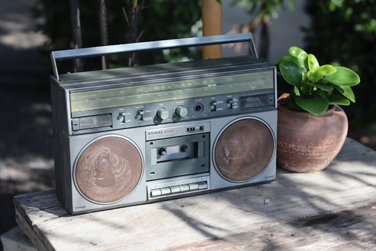

🌦️ Météo – Bruxelles
La météo influence les radios que nous écoutons. Voici la météo actuelle à Bruxelles.

Chaque jour, une image inspirante autour du monde, des radios ou des cultures.
La météo influence les radios que nous écoutons. Voici la météo actuelle à Bruxelles.
Ce blog accompagne le projet Radio Monde : une carte interactive des radios du monde, pensée pour rester simple, légale et agréable à utiliser.
Ce blog accompagne le projet Radio Monde : une carte interactive des radios du monde, pensée pour rester simple, légale et agréable à utiliser.
Ici, je note les évolutions du projet, les idées futures, et quelques réflexions sur le streaming, les satellites et la cartographie des médias.
La version PWA de Radio Monde est désormais installable sur mobile. L’objectif reste de garder une structure légère, facile à maintenir, tout en améliorant l’expérience sur téléphone.
Les prochaines étapes : affiner le design, ajouter quelques radios supplémentaires, et documenter les choix techniques pour garder le projet clair.